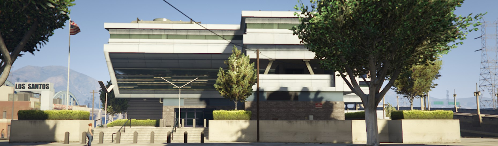
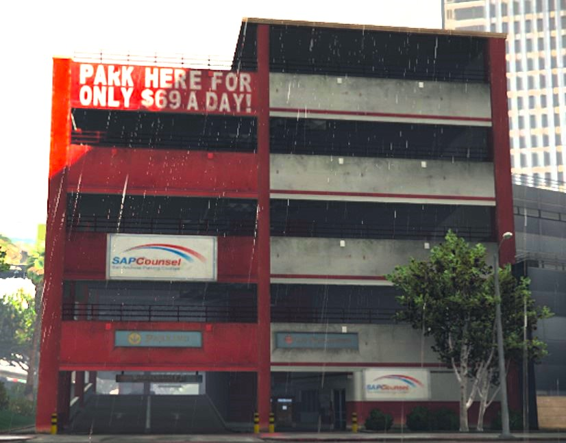
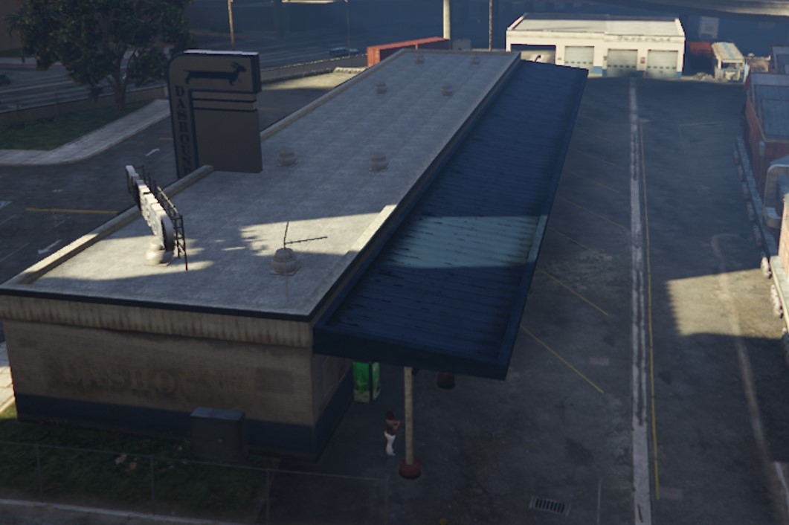
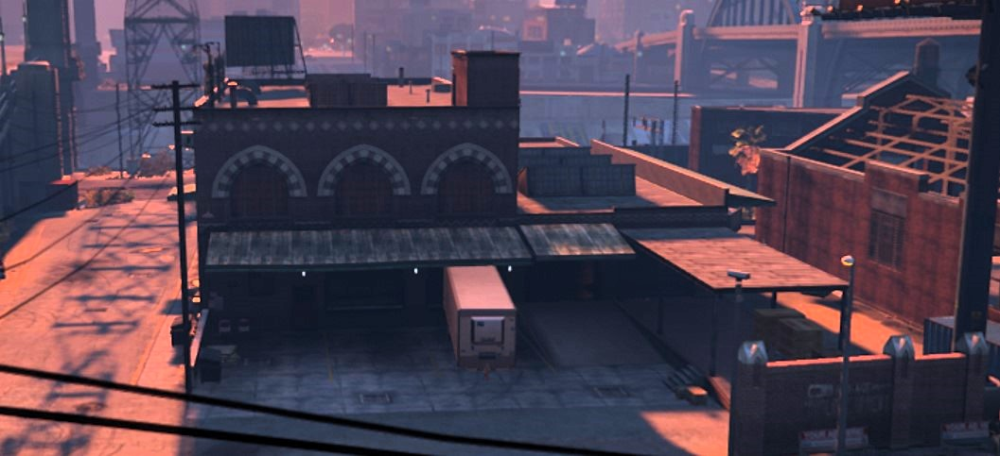
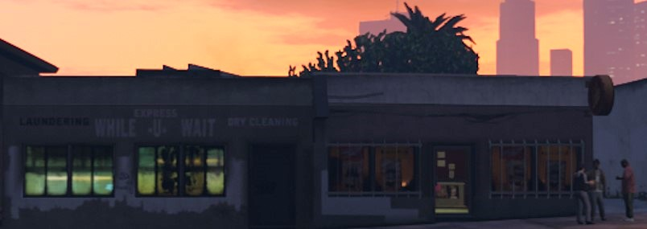

<!DOCTYPE html>
<html lang="zh-TW">
<head>
    <meta charset="UTF-8">
    <meta name="viewport" content="width=device-width, initial-scale=1.0">
    <title>熊班長の地標教學</title>
    <link rel="stylesheet" href="https://unpkg.com/leaflet@1.9.4/dist/leaflet.css" />
    <style>
        html, body, #map {
            margin: 0; padding: 0; width: 100%; height: 100%;
            background-color: #0d1117;
        }
        .rp-popup h3 { margin: 0 0 5px 0; color: #d32f2f; }
        .rp-popup p { margin: 0; font-size: 14px; line-height: 1.4; }
    </style>
</head>
<body>

    <div id="map"></div>

    <script src="https://unpkg.com/leaflet@1.9.4/dist/leaflet.js"></script>
    <script>
        // 1. 初始化地圖
        var map = L.map('map', {
            crs: L.CRS.Simple,
            minZoom: -2, // 允許縮得更小看全圖
            maxZoom: 3,
            noWrap: true
        });

        // 2. 定義地圖的大小範圍 (對應 map.jpg 的像素比例)
        var bounds = [[0, 0], [2048, 2048]];

        // 3. 核心修改：直接載入同資料夾底下的 map.jpg，不再求人！
        L.imageOverlay('map.jpg.png', bounds).addTo(map);
        map.fitBounds(bounds);
        map.setView([1024, 1024], -1); // 預設視角看中央

        // 4. 圖層群組
        var cityLayer = L.layerGroup().addTo(map);
        var davisLayer = L.layerGroup();
        var eastLayer = L.layerGroup();
        var airLayer = L.layerGroup();
        var woodLayer = L.layerGroup();
        var subwayLayer = L.layerGroup();
        var otherLayer = L.layerGroup();

        // 5. 新增你的 RP 教學點位 (座標會根據新地圖大小改變，以下為新對應位置)
        
        // 市中心區域
        var lspdMarker = L.marker([502, 1011]).addTo(cityLayer);
        lspdMarker.bindPopup(`
            <div class="rp-popup">
                <h3>洛聖都警局 (LSPD / MRPD)</h3>
                <div class="rp-popup" style="width: 250px; min-width: 250px; padding-top: 5px;">
                    
                </div>
                <p> </p>
            </div>
        `);

        var parkMarker = L.marker([521, 975]).addTo(cityLayer);
        parkMarker.bindPopup(`
            <div class="rp-popup" style="width: 280px;">
                <h3>軍團廣場/市政廳</h3>
        
                <ul style="padding-left: 20px; margin: 5px 0; font-size: 13px; line-height: 1.5;">
                    <li>北面有樓梯可以上到威能橋</li>
                </ul>
            </div>
        `);

        var publicparkingMarker = L.marker([537, 976]).addTo(cityLayer);
        publicparkingMarker.bindPopup(`
            <div class="rp-popup" style="width: 280px;">
                <h3>公停</h3>
        
                <ul style="padding-left: 20px; margin: 5px 0; font-size: 13px; line-height: 1.5;">
                    <li>一、二樓各有一個出口</li>
                </ul>
            </div>
        `);

        var redparkingMarker = L.marker([539, 885]).addTo(cityLayer);
        redparkingMarker.bindPopup(`
            <div class="rp-popup" style="width: 280px;">
                <h3>紅白停車場(簡稱紅白)</h3>
                <div style="position: relative; width: 100%; height: 0; padding-bottom: 56.25%; margin-bottom: 8px;">
                    <iframe src="https://www.youtube.com/embed/CMYXK8PFGfU?si=f5oCuR6Mhh1nBD14" 
                        style="position: absolute; top: 0; left: 0; width: 100%; height: 100%; border: 0; border-radius: 4px;" 
                        allowfullscreen>
                    </iframe>
                </div>
                
                
                <ul style="padding-left: 20px; margin: 5px 0; font-size: 13px; line-height: 1.5;">
                    <li>南面有一個出口(南出)</li>
                    <li>北面有兩個出口(北出&北小洞)</li>
                    <li>頂樓東面飛板可以飛到地面或屋頂</li>
                    <li>頂樓西面飛板可以飛上高洛波塔</li>
                    <li>北側往高速破口可能有接應</li>
                    <li>各樓層都可能有接應車</li>
                    <li>東面樓梯常是接應點</li>
                </ul>
            </div>
        `);

        var whiteparkingMarker = L.marker([539, 864]).addTo(cityLayer);
        whiteparkingMarker.bindPopup(`
            <div class="rp-popup" style="width: 280px;">
                <h3>白色停車場(簡稱白停)</h3>
        
                <ul style="padding-left: 20px; margin: 5px 0; font-size: 13px; line-height: 1.5;">
                    <li>南面有一個出口(南出)</li>
                    <li>北面有一個出口北出</li>
                    <li>樓梯可以往北飛到捷運站</li>
                    <li>東側草地上高速可能有接應</li>
                </ul>
            </div>
        `);

        var busMarker = L.marker([561, 1015]).addTo(cityLayer);
        busMarker.bindPopup(`
            <div class="rp-popup" style="width: 280px;">
                <h3>公車站</h3>

                
                <ul style="padding-left: 20px; margin: 5px 0; font-size: 13px; line-height: 1.5;">
                    <li>高速公路徒步下公車站會有接應</li>
                </ul>
            </div>
        `);

        var boomMarker = L.marker([593, 1038]).addTo(cityLayer);
        boomMarker.bindPopup(`
            <div class="rp-popup" style="width: 280px;">
                <h3>爆炸倉</h3>

                
                <ul style="padding-left: 20px; margin: 5px 0; font-size: 13px; line-height: 1.5;">
                    <li>常見飛車點</li>
                    <li>北往南可直飛佩羅高速</li>
                    <li>飛到屋頂再飛佩羅高速</li>
                    <li>南往北直飛洛聖都高速</li>
                </ul>
            </div>
        `);

        var philboxMarker = L.marker([571, 988]).addTo(cityLayer);
        philboxMarker.bindPopup(`
            <div class="rp-popup">
                <h3>圓帽山醫院</h3>
                <p> </p>
            </div>
        `);

        var textileMarker = L.marker([507, 1059]).addTo(cityLayer);
        textileMarker.bindPopup(`
            <div class="rp-popup">
                <h3>紡織廠</h3>
                <div class="rp-popup" style="width: 250px; min-width: 250px; padding-top: 5px;">
                    
                </div>
                <p> </p>
            </div>
        `);

        var ranchumarketMarker = L.marker([503, 1127]).addTo(cityLayer);
        ranchumarketMarker.bindPopup(`
            <div class="rp-popup">
                <h3>藍丘超商</h3>
                <div class="rp-popup" style="width: 250px; min-width: 250px; padding-top: 5px;">
                    
                </div>
                <p> </p>
            </div>
        `);

        var eightMarker = L.marker([522, 915]).addTo(cityLayer);
        eightMarker.bindPopup(`
            <div class="rp-popup" style="width: 280px;">
                <h3>八字鬍</h3>
        
                <ul style="padding-left: 20px; margin: 5px 0; font-size: 13px; line-height: 1.5;">
                    <li>沿著樓梯往上走會接到威能橋上</li>
                </ul>
            </div>
        `);

        var redsideparkingMarker = L.marker([516, 883]).addTo(cityLayer);
        redsideparkingMarker.bindPopup(`
            <div class="rp-popup" style="width: 280px;">
                <h3>紅白旁停車場</h3>
        
                <ul style="padding-left: 20px; margin: 5px 0; font-size: 13px; line-height: 1.5;">
                    <li>往南經過小飛板可以接往低洛波塔</li>
                    <li>往東會通往艾爾塔街</li>
                    <li>往北會到紅白停車場南面</li>
                </ul>
            </div>
        `);

        var oldcarMarker = L.marker([485, 932]).addTo(cityLayer);
        oldcarMarker.bindPopup(`
            <div class="rp-popup">
                <h3>舊車商(PDM)</h3>
                <p> </p>
            </div>
        `);

        var pdmconstructionMarker = L.marker([487, 911]).addTo(cityLayer);
        pdmconstructionMarker.bindPopup(`
            <div class="rp-popup" style="width: 280px;">
                <h3>舊車商工地(PDM工地)</h3>
        
                <ul style="padding-left: 20px; margin: 5px 0; font-size: 13px; line-height: 1.5;">
                    <li>一樓的東西南北各一個出口</li>
                    <li>南棟上樓可以往東飛到PDM</li>
                    <li>南棟上樓可以往西飛到艾爾塔街</li>
                    <li>北棟上樓有往北的兩個出口可以飛下樓</li>
                </ul>
            </div>
        `);

        var openairparkingMarker = L.marker([567, 947]).addTo(cityLayer);
        openairparkingMarker.bindPopup(`
            <div class="rp-popup" style="width: 280px;">
                <h3>露天停車場</h3>
        
                <ul style="padding-left: 20px; margin: 5px 0; font-size: 13px; line-height: 1.5;">
                    <li>南側小洞可以往上到威能橋(通常會從上面下來)</li>
                    <li>東側有一個出口跟一個小洞往威能橋下</li>
                    <li>北側有一個出口可以接統合小道</li>
                </ul>
            </div>
        `);

        var littlesoulmarketMarker = L.marker([512, 821]).addTo(cityLayer);
        littlesoulmarketMarker.bindPopup(`
            <div class="rp-popup">
                <h3>小首爾超商</h3>
                <p> </p>
            </div>
        `);

        var littlesoulsubwayMarker = L.marker([456, 851]).addTo(cityLayer);
        littlesoulsubwayMarker.bindPopup(`
            <div class="rp-popup" style="width: 280px;">
                <h3>小首爾捷運站</h3>
        
                <ul style="padding-left: 20px; margin: 5px 0; font-size: 13px; line-height: 1.5;">
                    <li>沿著鐵軌往東會到MRPD後面(大角羔大街)</li>
                    <li>沿著鐵軌往南會進入機場系統</li>
                </ul>
            </div>
        `);

        var sanherMarker = L.marker([462, 834]).addTo(cityLayer);
        sanherMarker.bindPopup(`
            <div class="rp-popup">
                <h3>三合會</h3>
                <p> </p>
            </div>
        `);

        var helicopterMarker = L.marker([428, 818]).addTo(cityLayer);
        helicopterMarker.bindPopup(`
            <div class="rp-popup">
                <h3>停機坪</h3>
                <p> </p>
            </div>
        `);

        var waterMarker = L.marker([454, 802]).addTo(cityLayer);
        waterMarker.bindPopup(`
            <div class="rp-popup" style="width: 280px;">
                <h3>落水區</h3>
        
                <ul style="padding-left: 20px; margin: 5px 0; font-size: 13px; line-height: 1.5;">
                    <li>過窄道直直往西南方有一個出口</li>
                    <li>過窄道又轉往西北方有一個出口</li>
                    <li>不要掉下水</li>
                </ul>
            </div>
        `);

        var littlesoulconstructionMarker = L.marker([506, 862]).addTo(cityLayer);
        littlesoulconstructionMarker.bindPopup(`
            <div class="rp-popup" style="width: 280px;">
                <h3>小首爾工地</h3>
        
                <ul style="padding-left: 20px; margin: 5px 0; font-size: 13px; line-height: 1.5;">
                    <li>西面有一個出口</li>
                    <li>北棟賞二樓可以直接從東面接到高洛波塔</li>
                    <li>北棟往北飛可以到白停</li>
                    <li>南棟往南飛可以到禁果大道</li>
                </ul>
            </div>
        `);
        
        // 街區區域
        var megamallMarker = L.marker([380, 940]).addTo(davisLayer);
        megamallMarker.bindPopup(`
            <div class="rp-popup" style="width: 280px;">
                <h3>Mega Mall</h3>
                <p> </p>
            </div>
        `);
        
        var davismarketMarker = L.marker([376, 928]).addTo(davisLayer);
        davismarketMarker.bindPopup(`
            <div class="rp-popup" style="width: 280px;">
                <h3>戴維斯超商</h3>
                <p> </p>
            </div>
        `);

        var courtparkingMarker = L.marker([395, 994]).addTo(davisLayer);
        courtparkingMarker.bindPopup(`
            <div class="rp-popup" style="width: 280px;">
                <h3>法院停車場</h3>
        
                <ul style="padding-left: 20px; margin: 5px 0; font-size: 13px; line-height: 1.5;">
                    <li>西面、北面、南面各一個出口</li>
                    <li>西面出口經連通道會到法院圓環</li>
                    <li>各樓層皆可能有接應車</li>
                </ul>
            </div>
        `);

        var courtcircleMarker = L.marker([403, 985]).addTo(davisLayer);
        courtcircleMarker.bindPopup(`
            <div class="rp-popup" style="width: 280px;">
                <h3>法院圓環</h3>
        
                <ul style="padding-left: 20px; margin: 5px 0; font-size: 13px; line-height: 1.5;">
                    <li>西面、上樓梯後北面各一個出口</li>
                    <li>東面上樓梯經連通道會到法院停車場</li>
                </ul>
            </div>
        `);

         // 東部工廠+米羅區域
        var touristMarker = L.marker([368, 1069]).addTo(eastLayer);
        touristMarker.bindPopup(`
            <div class="rp-popup" style="width: 280px;">
                <h3>觀光景點</h3>
                <p> </p>
            </div>
        `);

        var mirromarketMarker = L.marker([601, 1133]).addTo(eastLayer);
        mirromarketMarker.bindPopup(`
            <div class="rp-popup" style="width: 280px;">
                <h3>米羅超商</h3>
                <p> </p>
            </div>
        `);

        var casinoMarker = L.marker([670, 1094]).addTo(eastLayer);
        casinoMarker.bindPopup(`
            <div class="rp-popup" style="width: 280px;">
                <h3>賭場</h3>
                <p> </p>
            </div>
        `);

        var horseMarker = L.marker([685, 1104]).addTo(eastLayer);
        horseMarker.bindPopup(`
            <div class="rp-popup" style="width: 280px;">
                <h3>馬場</h3>
        
                <ul style="padding-left: 20px; margin: 5px 0; font-size: 13px; line-height: 1.5;">
                    <li>南面可以飛往摩托幫</li>
                    <li>西面入口往北可以飛往左側坡道</li>
                    <li>北面可以飛往洛聖都高速</li>
                </ul>
            </div>
        `);

        var damMarker = L.marker([669, 1210]).addTo(eastLayer);
        damMarker.bindPopup(`
            <div class="rp-popup" style="width: 280px;">
                <h3>水壩</h3>
                <p> </p>
            </div>
        `);

        // 機場區域
        var airparkingMarker = L.marker([237, 771]).addTo(airLayer);
        airparkingMarker.bindPopup(`
            <div class="rp-popup" style="width: 280px;">
                <h3>機場停車場</h3>
                <p> </p>
            </div>
        `);

        var airportMarker = L.marker([211, 766]).addTo(airLayer);
        airportMarker.bindPopup(`
            <div class="rp-popup" style="width: 280px;">
                <h3>機場大樓</h3>
        
                <ul style="padding-left: 20px; margin: 5px 0; font-size: 13px; line-height: 1.5;">
                    <li>有分一二樓</li>
                    <li>可能徒步走樓梯上/下樓上接應</li>
                </ul>
            </div>
        `);

        var aircircleMarker = L.marker([250, 788]).addTo(airLayer);
        aircircleMarker.bindPopup(`
            <div class="rp-popup" style="width: 280px;">
                <h3>機場圓環</h3>
                <p> </p>
            </div>
        `);

        // 豪宅區
        var operaMarker = L.marker([774, 1048]).addTo(woodLayer);
        operaMarker.bindPopup(`
            <div class="rp-popup" style="width: 280px;">
                <h3>歌劇院</h3>
        
                <ul style="padding-left: 20px; margin: 5px 0; font-size: 13px; line-height: 1.5;">
                    <li>西面圍牆可能翻出去草地上接應</li>
                </ul>
            </div>
        `);

        var observatoryMarker = L.marker([710, 567]).addTo(woodLayer);
        observatoryMarker.bindPopup(`
            <div class="rp-popup" style="width: 280px;">
                <h3>天文台</h3>
                <p> </p>
            </div>
        `);

         var whitehouseMarker = L.marker([848, 868]).addTo(woodLayer);
        whitehouseMarker.bindPopup(`
            <div class="rp-popup" style="width: 280px;">
                <h3>白宮</h3>
                <p> </p>
            </div>
        `);

        // 地鐵系統
        var mirrosubwayMarker = L.marker([620, 1110]).addTo(subwayLayer);
        mirrosubwayMarker.bindPopup(`
            <div class="rp-popup" style="width: 280px;">
                <h3>米羅地下道</h3>
        
                <ul style="padding-left: 20px; margin: 5px 0; font-size: 13px; line-height: 1.5;">
                    <li>經過白通往大十字方向</li>
                    <li>到白通前可以迴轉走小道往警局後</li>
                </ul>
            </div>
        `);

        var hospitalsubwayMarker = L.marker([578, 929]).addTo(subwayLayer);
        hospitalsubwayMarker.bindPopup(`
            <div class="rp-popup" style="width: 280px;">
                <h3>醫院破口地下道</h3>
        
                <ul style="padding-left: 20px; margin: 5px 0; font-size: 13px; line-height: 1.5;">
                    <li>入口在佩羅高速上</li>
                    <li>往大十字方向</li>
                    <li>沙地地形</li>
                </ul>
            </div>
        `);

        var mrpdsubwayMarker = L.marker([492, 1025]).addTo(subwayLayer);
        mrpdsubwayMarker.bindPopup(`
            <div class="rp-popup" style="width: 280px;">
                <h3>警局後地下道</h3>
        
                <ul style="padding-left: 20px; margin: 5px 0; font-size: 13px; line-height: 1.5;">
                    <li>右側有通道往水溝</li>
                    <li>進入圓筒型隧道前右側有小道往米羅</li>
                    <li>往大十字方向</li>
                </ul>
            </div>
        `);

        var mrpdditchsubwayMarker = L.marker([517, 1029]).addTo(subwayLayer);
        mrpdditchsubwayMarker.bindPopup(`
            <div class="rp-popup" style="width: 280px;">
                <h3>警局後水溝小道</h3>
        
                <ul style="padding-left: 20px; margin: 5px 0; font-size: 13px; line-height: 1.5;">
                    <li>通往警局後地下道</li>
                </ul>
            </div>
        `);

        var eltasubwayMarker = L.marker([496, 904]).addTo(subwayLayer);
        eltasubwayMarker.bindPopup(`
            <div class="rp-popup" style="width: 280px;">
                <h3>艾爾塔地下道</h3>
        
                <ul style="padding-left: 20px; margin: 5px 0; font-size: 13px; line-height: 1.5;">
                    <li>通往大十字</li>
                    <li>下一站是白停</li>
                </ul>
            </div>
        `);

        var whitesubwayMarker = L.marker([553, 858]).addTo(subwayLayer);
        whitesubwayMarker.bindPopup(`
            <div class="rp-popup" style="width: 280px;">
                <h3>白停捷運站</h3>
        
                <ul style="padding-left: 20px; margin: 5px 0; font-size: 13px; line-height: 1.5;">
                    <li>往大十字方向下一站是海灣市捷運站</li>
                    <li>往艾爾塔方向下一站是艾爾塔出口</li>
                </ul>
            </div>
        `);

        var baysubwayMarker = L.marker([579, 715]).addTo(subwayLayer);
        baysubwayMarker.bindPopup(`
            <div class="rp-popup" style="width: 280px;">
                <h3>海灣市捷運站</h3>
        
                <ul style="padding-left: 20px; margin: 5px 0; font-size: 13px; line-height: 1.5;">
                    <li>往大十字方向下一站是雙珠寶捷運站</li>
                    <li>往艾爾塔方向下一站是白停捷運站</li>
                </ul>
            </div>
        `);

        var jewelrysubwayMarker = L.marker([647, 803]).addTo(subwayLayer);
        jewelrysubwayMarker.bindPopup(`
            <div class="rp-popup" style="width: 280px;">
                <h3>雙珠寶捷運站</h3>
        
                <ul style="padding-left: 20px; margin: 5px 0; font-size: 13px; line-height: 1.5;">
                    <li>往大十字方向下一站是shopping mall捷運站</li>
                    <li>往艾爾塔方向下一站是海灣市捷運站</li>
                </ul>
            </div>
        `);

        var shoppingmallsubwayMarker = L.marker([612, 897]).addTo(subwayLayer);
        shoppingmallsubwayMarker.bindPopup(`
            <div class="rp-popup" style="width: 280px;">
                <h3>shopping mall捷運站</h3>
        
                <ul style="padding-left: 20px; margin: 5px 0; font-size: 13px; line-height: 1.5;">
                    <li>往大十字方向下一站是大十字</li>
                    <li>往艾爾塔方向下一站是雙珠寶捷運站</li>
                </ul>
            </div>
        `);

        var bigtensubwayMarker = L.marker([573, 963]).addTo(subwayLayer);
        bigtensubwayMarker.bindPopup(`
            <div class="rp-popup" style="width: 280px;">
                <h3>大十字</h3>
        
                <ul style="padding-left: 20px; margin: 5px 0; font-size: 13px; line-height: 1.5;">
                    <li>沙地是往醫院破口</li>
                    <li>木棧道是接白通往米羅</li>
                    <li>往西方向是接shopping mall捷運站往艾爾塔</li>
                    <li>往東方向是往警局後</li>
                </ul>
            </div>
        `);

        // 其他區域
        var jailMarker = L.marker([1087, 1220]).addTo(otherLayer);
        jailMarker.bindPopup(`
            <div class="rp-popup" style="width: 280px;">
                <h3>監獄</h3>
                <p> </p>
            </div>
        `);

        var smallairMarker = L.marker([1181, 1173]).addTo(otherLayer);
        smallairMarker.bindPopup(`
            <div class="rp-popup" style="width: 280px;">
                <h3>中部機場</h3>
                <p> </p>
            </div>
        `);

        // 右上角選單控制
        var overlayMaps = {
            "市中心": cityLayer,
            "街區": davisLayer,
            "東部工廠+米羅": eastLayer,
            "機場系統": airLayer,
            "豪宅區": woodLayer,
            "地鐵系統": subwayLayer,
            "其他": otherLayer
        };
        L.control.layers(null, overlayMaps, { collapsed: false }).addTo(map);

        // 點擊地圖可以在網頁的 F12 主控台抓取點位座標
        map.on('click', function(e) {
            console.log("當前點擊的正確座標為: ", Math.round(e.latlng.lat), Math.round(e.latlng.lng));
        });
    </script>
</body>
</html>
